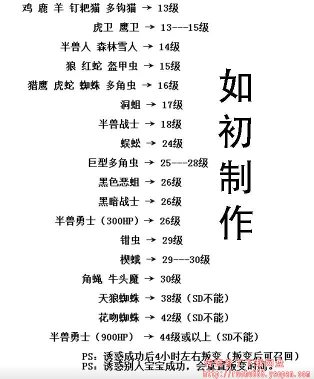

法师宝宝及属性详解
在1.76复古传奇里面，法师可以诱惑的怪物其实很多，很多老玩家玩了20年都不知道，还有各种宝宝的属性，大家都不清楚，我这里给大家做一个详细介绍！具体请看下面的表格
需要注意的是在复古传奇中，1级的诱惑之光是无法把宝宝练到7级的，诱惑成功后4小时左右叛变(叛变后可召回) ，诱惑别人的宝宝陈工会重置叛变时间。


钳虫：钳虫的防御属性和魔御属性都不错，而且攻击力也就稍弱于虎卫，攻击速度和走路都慢所以不是太受欢迎，前期可以分担伤害，节省耗蓝，很容易召满五只，在蜈蚣洞里面很容易多，除了蜈蚣洞有钳虫外其他很多地图也都刷新钳虫。钳虫的优势是练级，法师招5个钳虫在蜈蚣洞就不用吃药了，每次用火球引三两个怪然后站着看就行了，猪洞也可以，就算遇到身边刷新，钳虫也能扛得住，最主要省药钱
黑色恶蛆：俗称车轱辘（轮胎），轮胎的优势是PK，速度快攻击快，伤害移攻速都很好，很容易召满五只，死了再招，随用随换。猪洞必备品。
虎卫：法师最难拥有的宝宝，是人人可招的稀有宝宝，前期过渡神器。唯一刷新位置：白日门虎卫堂，每4个小时刷新一只。虎卫本身就是个噱头，没事谁去刻意招啊，有那点时间招五个巨多也比它强。 虎卫在盛大官服还会给自己带来无尽的麻烦：道士没事给他下个毒，法师见了就诱惑，你得带上随机到处飞。文章里没提到鹰卫，鹰卫是白送都没人招。虎卫3200的血不如道士7级狗，伤害太低了，很平均的25/40点血，防高才十几点血，7级虎卫单挑锤不过1000的大锤
巨型多角虫：俗称多多，免疫魔法伤害，很适合混赤月打蜘蛛，刷新地点：未知暗殿，盟重省大地图。
半兽勇士 (900HP)：俗称大勇，物理伤害免疫，皮糙肉厚，PK练级都OK。盛大传奇法师是没办法诱惑成宝宝的，但是很多复古的传奇私服可以诱惑大勇。